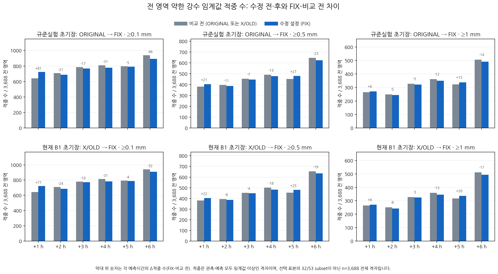
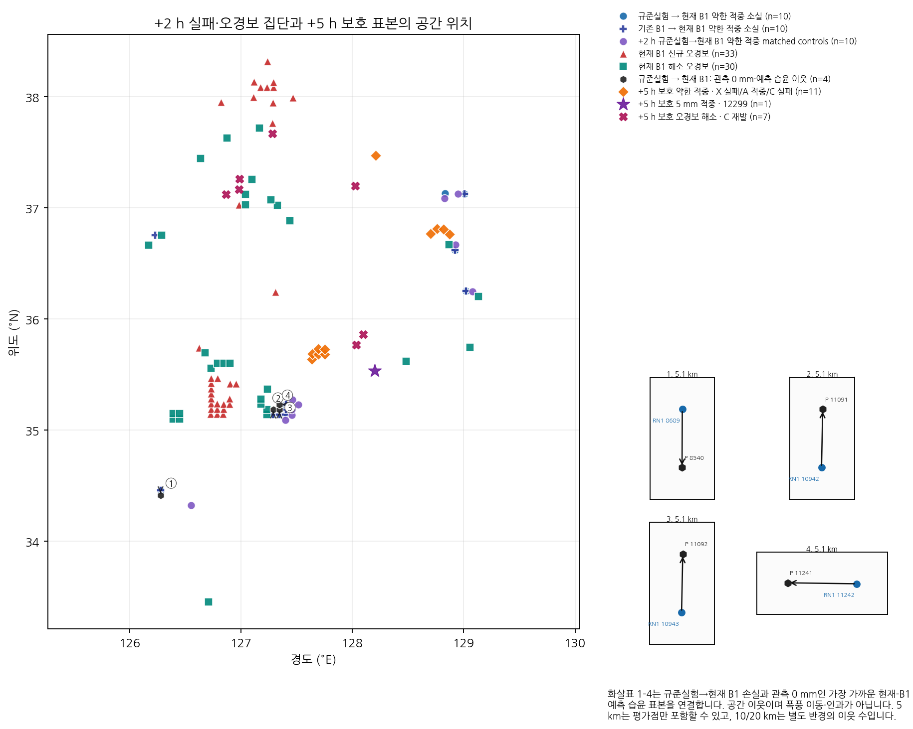
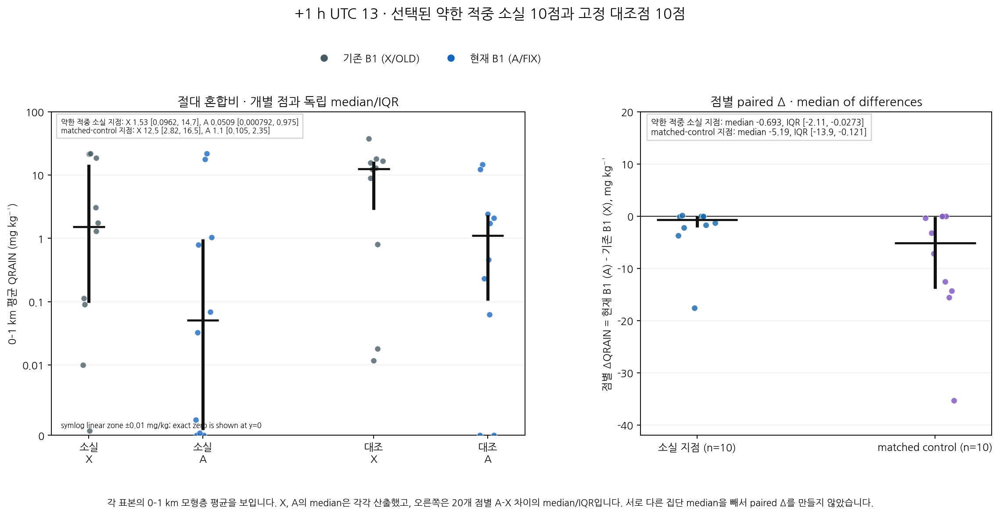

CP02 보호·실패 과정 진단 그림
고정 사례의 전 영역 점수와 밀봉된 표본을 요약합니다. 공간 쌍은 storm motion이 아니며 인과를 입증하지 않습니다.
전 영역의 0.1, 0.5, 1.0 mm 적중 수와 FIX-비교 전 변화. 각 시간은 모든 3,688 격자를 포함합니다.
고정 약한 적중 실패·대조·오경보 집단과 +5 h 보호 표본. 네 화살표는 OA 손실과 관측 0인 예측 습윤 이웃의 공간 관계입니다.
UTC 13의 0–1 km QRAIN 절대값과 점별 paired A-X. 절대값은 symlog 축에서 exact zero를 포함합니다.